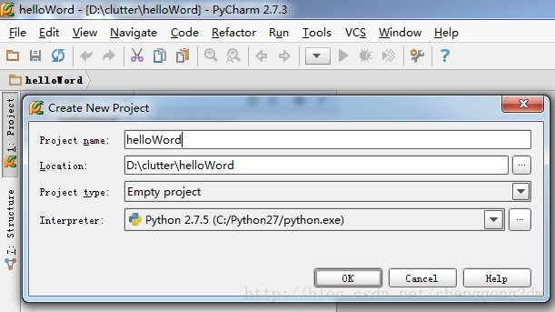
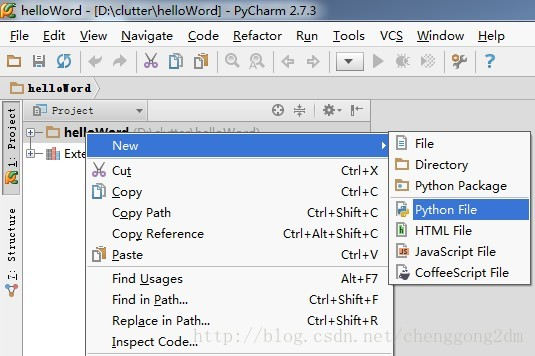
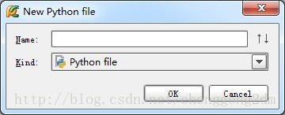
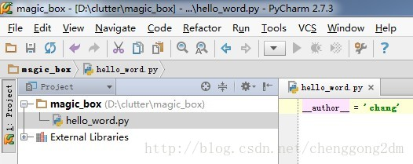
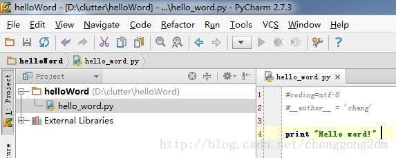
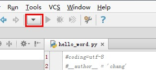
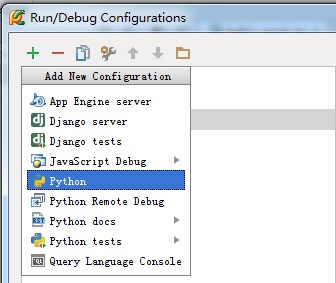
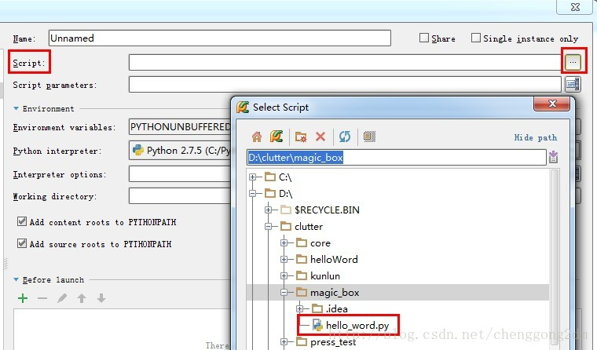
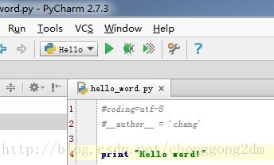
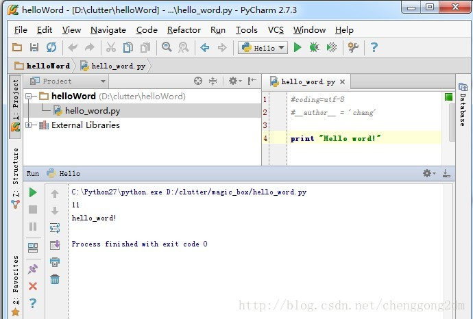

作为PyCharm编辑器的起步，我们理所当然的先写一个Hello word，并运行它。（此文献给对IDE不熟悉的初学者）
1，新建一个项目
File --> New Project...

2，新建一个文件

3，输入文件名

4，进入编写界面

输入code：
print "Hello word!"

5，设置控制台
运行之前，我们发现快捷菜单上的【运行】和【调试】都是灰色的，不可触发状态。是因为，我们需要先配置一下控制台。
点击运行旁边的黑色倒三角，进入【Run/Debug Configurations】配置界面。（或者点击Run --> Edit Configurations 也一样）

在【Run/Debug Configurations】配置界面里，
点击绿色的加号，新建一个配置项，并选择python。（因为hello word 就是个python程序）

在右边的配置界面里：
Name 一栏里写个名字，比如Hello
点击Scrip选项，找到刚才我们写的hello_word.py

点击ok, 自动返回到编辑界面，这时候【运行】【调试】按钮全部变绿！

6，运行

OK，PyCharm的首秀，圆满结束！